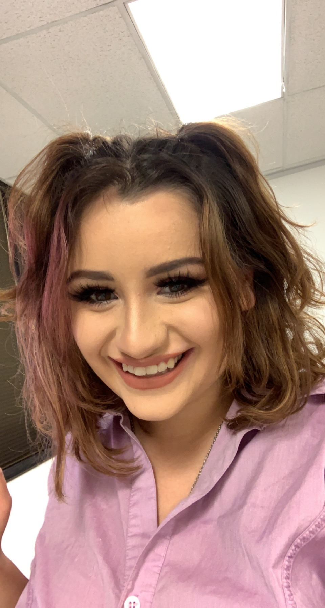

Who is Brit Valadez?

Intro to Brit
Hi! I am Brit Valadez, an entry level Software Developer.
Where can you find me you ask? Well I am located in Dallas, Texas.
About Me
I begun my coding journey at 21. I started with teaching my self html and I instantly fell in love. After doing more research into the field of software development, I decided to apply to Thinkful's Engineering Immersion Bootcamp. From there I have begun learning so much more about the in's and outs of Software Engineering. Every day that I learn more code I am more excited to be a full time developer.
I loved teaching myself html, but I know learning is 10x easier with a friend. I would love to work with other developers, so please reach out if you want to create something great together.
As much as I love coding 24/7, some of my other hobbies include:
- Hiking.
- Camping.
- Gaming on my Nintendo Switch.
- Spending time with my loved ones.
Contact Me
Want to collaborate on projects? Or just want to follow my journey? Reach out to me: